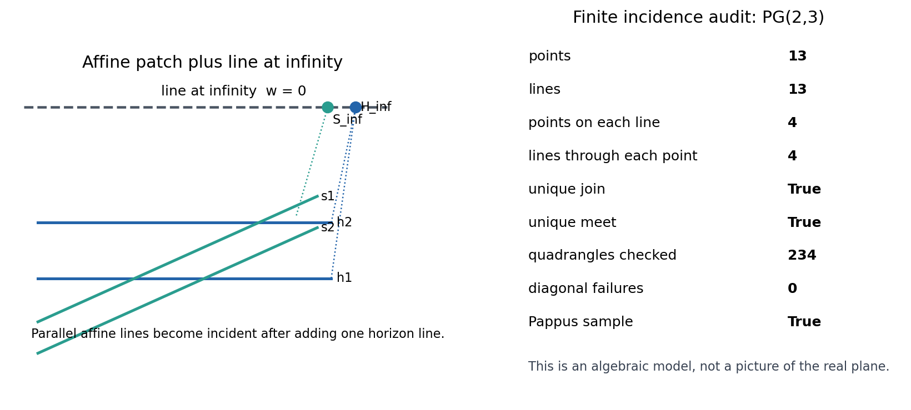
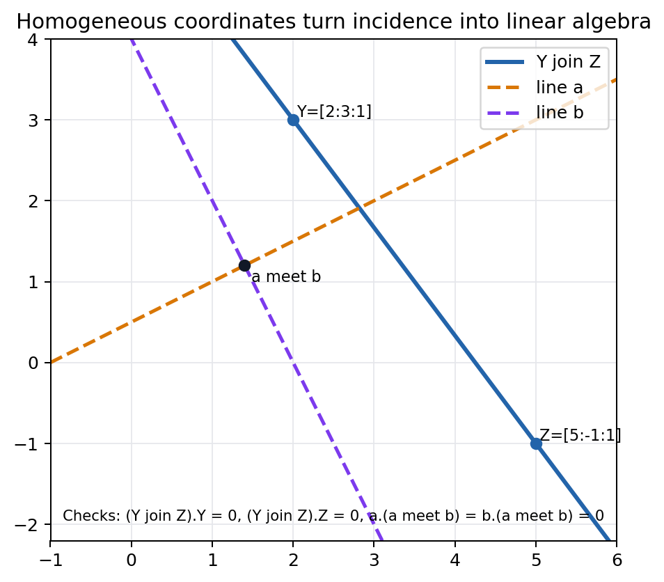
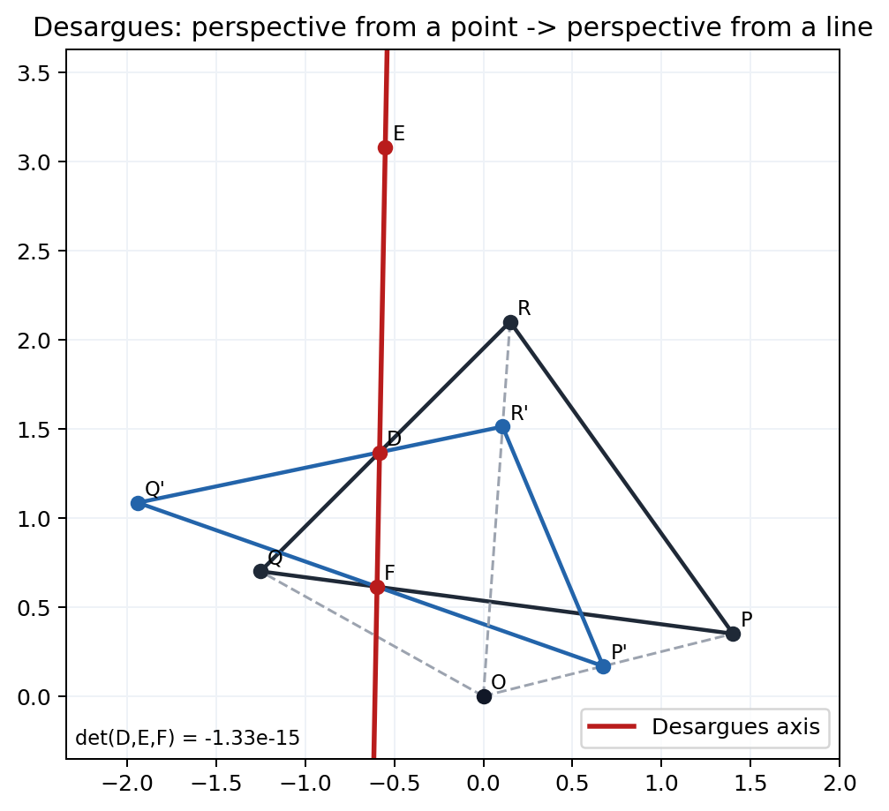
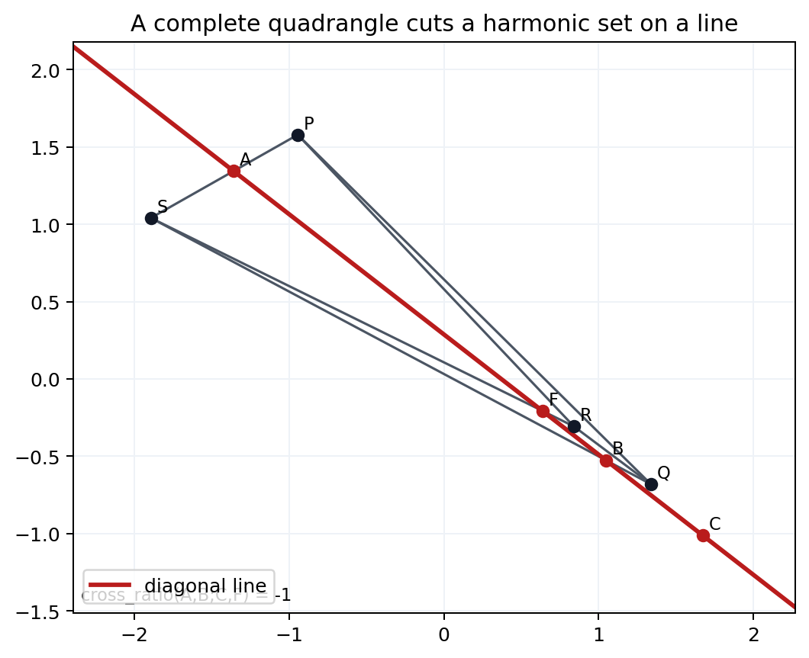
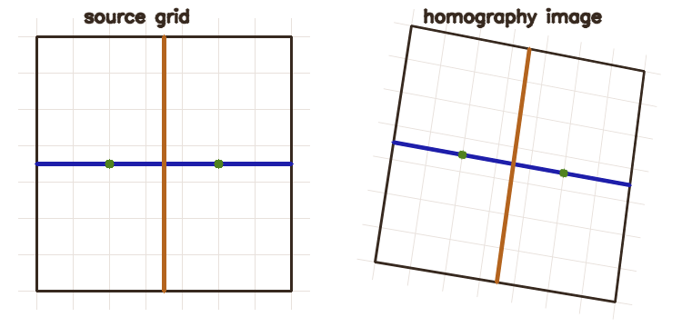
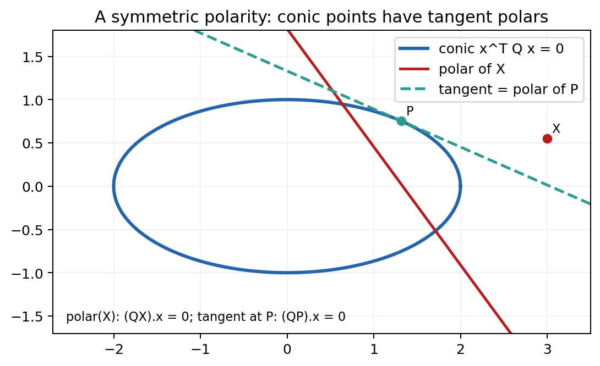
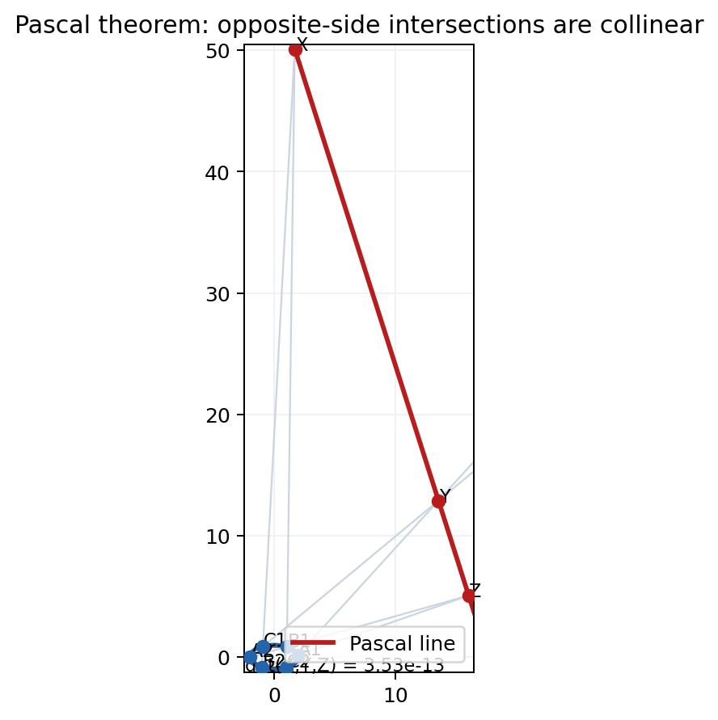

Source Span
Printed pages 229-262; PDF pages 247-280.
Core Objects
Points, lines, joins, meets, conics, projectivities, and the line at infinity.
Surviving Measurement
Metric length changes, but cross-ratio and incidence persist.

Projective geometry preserves incidence and cross-ratio after parallel exceptional cases are absorbed into points at infinity.
Printed pages 229-262; PDF pages 247-280.
Points, lines, joins, meets, conics, projectivities, and the line at infinity.
Metric length changes, but cross-ratio and incidence persist.

No privileged parallelism once infinity is included.
Joins and meets become homogeneous cross products.
Desargues, harmonic ranges, and Pascal are incidence tests.
Cross-ratio survives fractional linear motion.
Polarities turn points into lines and tangents into incidence checks.
Reguli, ruled quadrics, and absolute polarity restore extra geometry.
13
13
Each line has \(4\) points, and each point has \(4\) lines through it.
Unique join, unique meet, and the Pappus sample are all true.
\(234\) quadrangles checked with zero diagonal-collinearity failures.
$$\ell=Y\times Z,\qquad X=a\times b$$
\(\ell_{YZ}=(4,3,-17)\), with incidences \(0.0\) at \(Y\) and \(Z\).
\(X=(1.4,1.2,1.0)\), with incidences \(0.0\) on both lines.
Scale changes coordinates, but not the represented projective point or line.


Three connector collinearity residuals are \(0.0\).
-1.33e-15
Side intersections lie on one axis line.
\((-2.688,\ 0.050,\ -1.634)\).
Projective theorems are incidence statements, so determinant residuals are the right checks.
$$[A,B;C,F]=-1$$
4.22e-15
2.22e-16
Source cross-ratio \(1.3078817734\) maps to \(1.3078817734\).

0.0
\(1.2\) becomes \(1.200000067\).
Determinant residual \(5.25\times10^{-4}\) after the synthetic warp.
Adjacent length ratio changes from \(0.60000002\) to \(0.60980713\).


\(Q\) is symmetric with determinant \(-0.25\).
Point-on-conic value and tangent incidence are both \(0.0\).
Six conic residuals are \(0.0\); Pascal collinearity residual is \(3.53\times10^{-13}\).

\(x^2+y^2-z^2=1\), with \(12\) sampled rulings.
1.11e-15
Euclidean recovery uses \(x_4=0\).
\(x_1y_1+x_2y_2+x_3y_3=0\); one checked dot product is \(0.0\).
Projective incidence first, affine infinity next, Euclidean orthogonality last.
Joins, meets, collinearity, conics, and cross-ratio survive projective moves.
Choosing a line at infinity restores parallelism.
Choosing an absolute polarity restores orthogonality and metric meaning.
Metric length ratios can change under a homography even when cross-ratio survives.